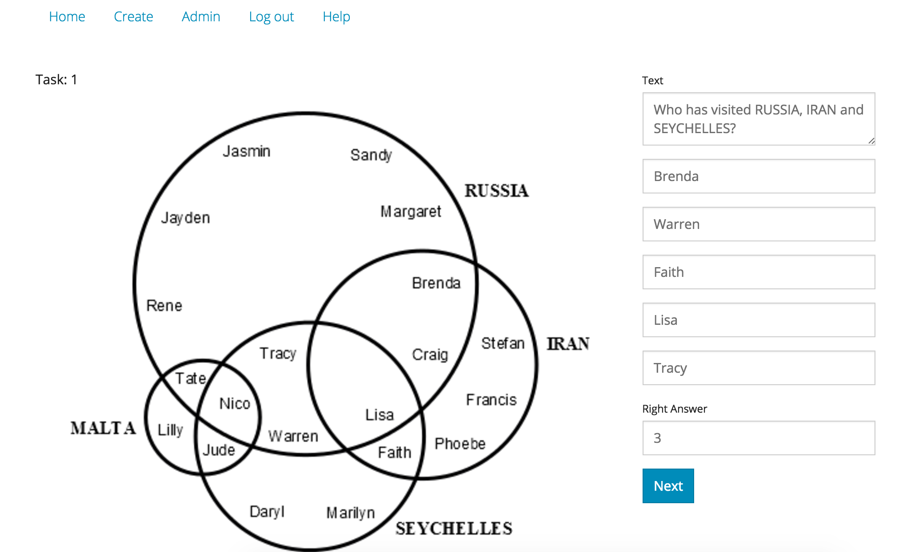
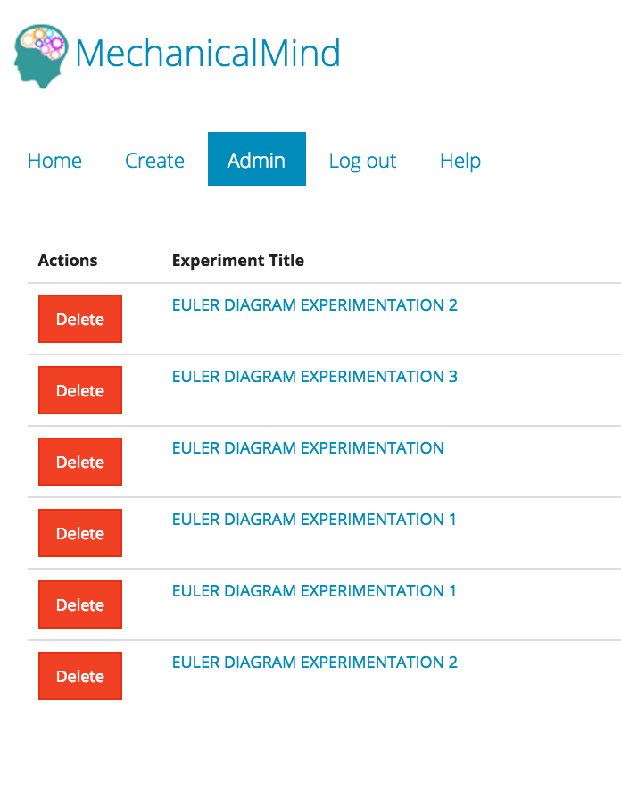
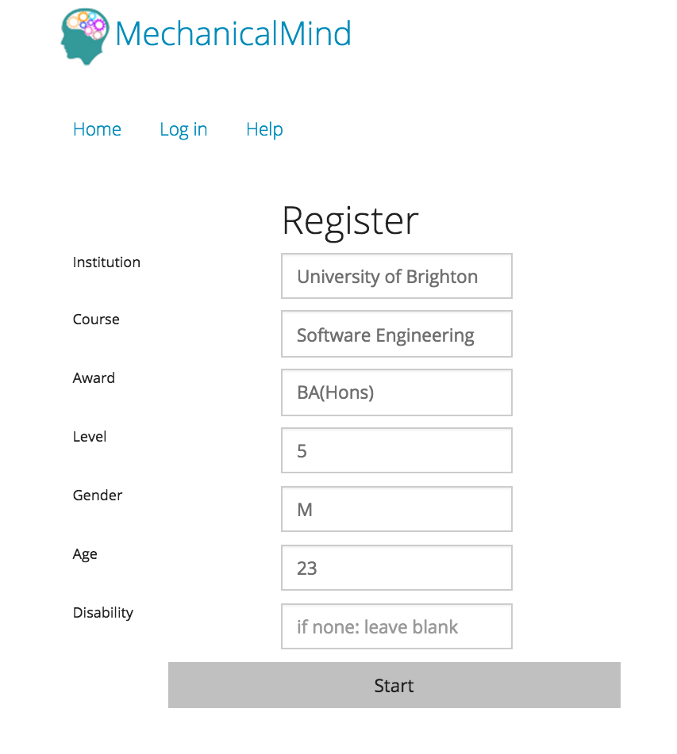
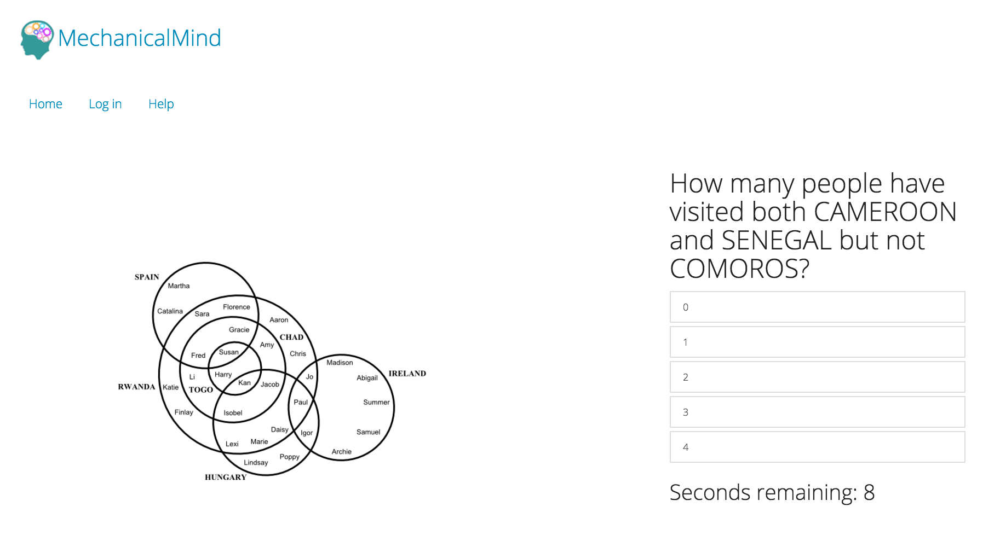
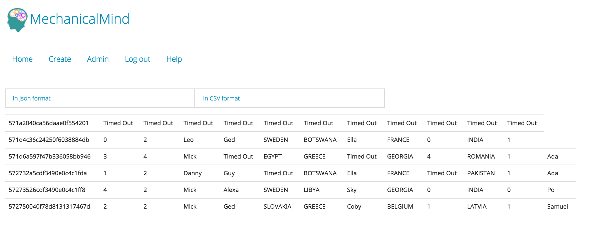
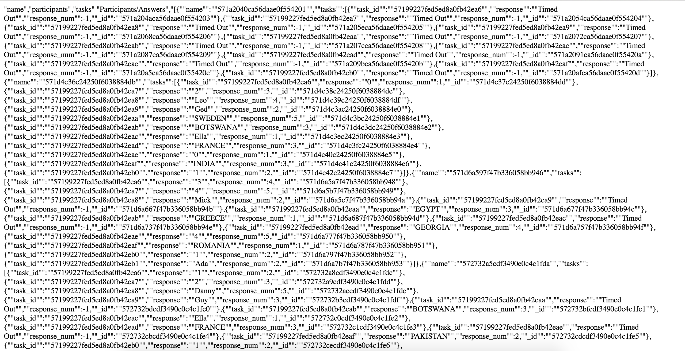

MechanicalMind
Final year project, built with Node.js, Express and MongoDB
Welcome to MechanicalMind project page
Project Idea:
The Visual Modelling Group (VMG) at the University of Brighton is a
research group that carries out empirical research, this Web Application was
initially required to act as a "CMS-like" application. But as it progressed it
became clear that a better idea is to separate the process of building a quiz
and the Content Management System processes.
Building a quiz:
Only experimenters can build quizzes, therefore they have to login through this page.
Assuming the files which help build a reasearch are on the server already.
Then the app needs to know where they are and which files are used.
When the experiment files are found, the the app builds a quiz object in the database and
loads some of the quiz's specifications in an editable format like a form.
If everything is ok then the experimenter submits the form which leads them to checking tasks (questions) one by one.
The process of checking tasks is separated into a task per page, where the image for the question is loaded alongside the
the question itself, the answers and the right answer in a form a a form where they can all be changed.

When all the tasks are checked, then the user (experimenter) is redirected back to the admin home-page
where they can either deleted or keep the experiment, note that when an experiment is created, it is immediately
available for participation

Participation:
When a user opens the site they are presented with a number of experiments to take part in.
If the user chooses to participate in one of the quizzes, clicking on the title of the quiz redirects them to
a registration page. This registration is per user per quiz, therefore the data collected from the participant
registration process is minimal, only relates to the quiz and the user can not be traced from it.

When a participant registered, in the background a data collection bucket is created to hold the data generated from
their answers, then they are redirected to the first task or any task if random is enabled.
All tasks (questions) have a timer attached to them if the participant does not answer the question in the time set
by the general quiz settings, then the system automatically answers timed-out for them, and the process continues
until all tasks are answered or timed out.
On some quizzes timer is shown, counting down until it reaches 0 then the task changes to the next one.

When all the questions are answered, then the participant is redirected to the home page where the can take part in another quiz.
Data:
When an experimenter logs, they will see all all their experiments displayed as a list of anchor links.
If any of these links are clicked, then they are redirected to another page where it shows the data collected
from participations in a table format where the headers of the table are the tasks and each column contains
a participant's answer.

On this page there are also options to show the data in (CSV or JSON) format.
